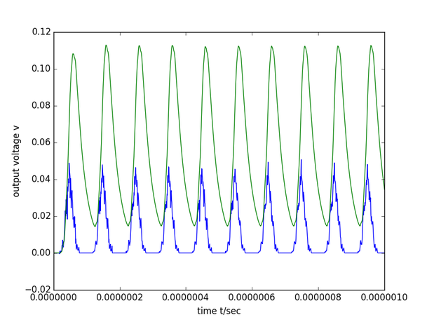
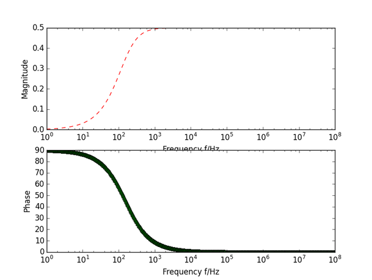
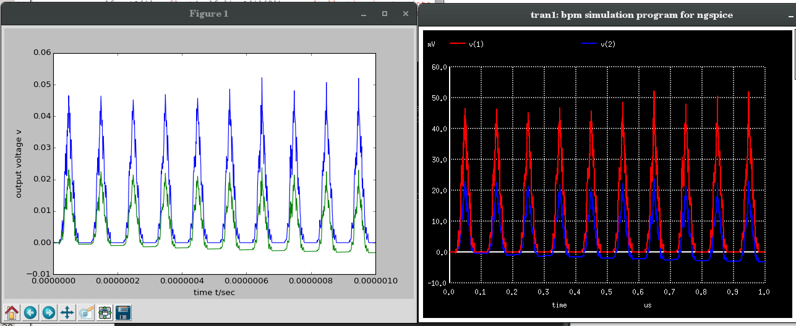

The common modules consist of electronics, optics systems cables etc. They are described and documented here.
Figure shows the example of amplificaiton of current profile of 10Mhz frequnecy with a gain of 20db
Generic amplifier and attenuator definition
Generic Amplifier Module
The module takes the following arguments
Amplification — The amplification/attenuation in (dB)
Noise figure — Accelerator setting object
Input Noise — When the input is open or terminated (in nV/sqrt(Hz))
AmplifierType (Optional) — Specific amplifier implementation
Figure shows the example of Transfer function module
Figure shows the output at one of the plate of BPM in Python and Ngspice
